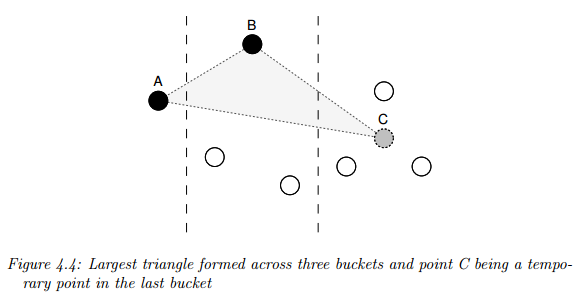

d3fc-sample View on GitHub View on unpkg
A D3 component for down-sampling data using a variety of methods. Data is typically partitioned into equally-sized buckets, and one data point from each bucket is chosen. The algorithms employed here are Largest Triangle 1 (or 3) Bucket, or Mode-Median as detailed in the thesis Downsampling Time Series for Visual Representation.

For a live demo, see the GitHub Pages site.
API Reference
The sampling components provide an API for downsampling data. They are typically used to improve rendering performance of charts or maps when there is a significant amount of data. The data is passed to the component, which then returns a smaller downsampled array.
import {largestTriangleThreeBucket} from 'd3fc-sample';
// Create the sampler
const sampler = largestTriangleThreeBucket();
// Configure the x / y value accessors
sampler.x(d => d.x)
.y(d => d.y);
// Configure the size of the buckets used to downsample the data.
sampler.bucketSize(10);
// Run the sampler
const sampledData = sampler(data);Mode Median
The mode-median sampler is fairly basic. It partitions the data, then selects a representative piece of data from that set: the mode -- if it exists -- or the median.
# fc.modeMedian()
Constructs a new sampler.
# modeMedian(data)
Runs the sampler. It returns the downsampled data (it doesn't modify the data array itself). The downsampler selects the mode (if it exists), or the median value.
# modeMedian.value(accessorFunc)
Specifies the accessor function used to obtain the value from the supplied array of data. The accessor function is invoked exactly once per datum, and should return the value to be down-sampled.
# modeMedian.bucketSize(size)
Denotes the amount of data points for each bucket. The first and last data points are always their own bucket. The second-last bucket will be of size (data.length - 2) % size.
Largest Triangle One Bucket
Largest Triangle is a sampler where, given two pre-determined points, the point in the bucket that forms the largest triangle has the largest effective area and so is the most important in the bucket. The largest triangle algorithm comes in two flavours -- one bucket and three bucket. The algorithms are described in detail in the thesis Downsampling Time Series for Visual Representation, with a summary of their descriptions reproduced here:
This algorithm is very simple. First all the points are ranked by calculating their effective areas. Points with effective areas as null are excluded. The data points are then split up into approximately equal number of buckets as the specified downsample threshold. Finally, one point with the highest rank (largest effective area) is selected to represent each bucket in the downsampled data.
The effective area of a point is the area size of a triangle it forms with its two adjacent points.

# fc.largestTriangleOneBucket()
Constructs a new sampler.
#largestTriangle(data)
Runs the sampler, returning the downsampled data (it doesn't modify the data array itself). The sampler selects the point in the bucket with the largest area between two other points (determined by algorithm).
# largestTriangle.x(accessorFunc)
# largestTriangle.y(accessorFunc)
Specifies the accessor function used to obtain the x and y values from the supplied array of data. The accessor function is invoked exactly once per datum, and should return the value to be down-sampled.
# largestTriangle.bucketSize(size)
Denotes the amount of data points for each bucket. The first and last data points are always their own bucket. The second-last bucket will be of size (data.length - 2) % size.
Largest Triangle Three Buckets
The algorithm is similar to the above, except it works with three buckets at a time and proceeds from left to right. The first point which forms the left corner of the triangle (the effective area) is always fixed as the point that was previously selected and one of the points in the middle bucket shall be selected now.
The point used to form the triangle in the last bucket is a temporary point which is the average of all other points within that bucket.

# fc.largestTriangleThreeBucket()
Constructs a new sampler.
# largestTriangle(data)
Runs the sampler, returning the downsampled data (it doesn't modify the data array itself). The sampler selects the point in the bucket with the largest area between two other points (determined by algorithm).
# largestTriangle.x(accessorFunc)
# largestTriangle.y(accessorFunc)
Specifies the accessor function used to obtain the x and y values from the supplied array of data. The accessor function is invoked exactly once per datum, and should return the value to be down-sampled.
# largestTriangle.bucketSize(size)
Denotes the amount of data points for each bucket. The first and last data points are always their own bucket. The second-last bucket will be of size (data.length - 2) % size.
Bucket
d3fc-sample also comes with a data bucket utility, used by the algorithms. It partitions data into evenly-sized chunks.
# fc.bucket()
Construct a data bucket utility instance.
# bucket(data)
Partitions the data into evenly sized buckets, in the form:
// where n is the bucket size
[
[data[0], data[1], ..., data[n - 1]],
[data[n], data[n + 1], ..., data[2n - 1]],
...
[..., data[data.length - 1]]
]# bucket.bucketSize(size)
Denotes the amount of data points for each bucket. The last bucket will be of size data.length % size.
Found a problem in this page? Submit a fix!